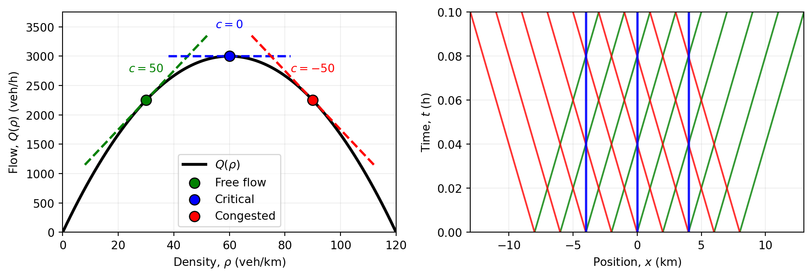
Lecture 9 — Advanced Traffic Flow Models and Applications
MATH3001(5005) — Applied Mathematical Modelling
Prof. Benchawan Wiwatanapataphee
Curtin University
6 Oct 2026
Goals Today:
- Lecture 8 Recap
1.1 Traffic Modelling Workflow
1.2 Conservation Law
1.3 Fundamental Diagram - The Lighthill-Whitham-Richards (LWR) Model
2.1 The Wave Velocity
2.2 Shock Wave Propagation
2.3 Method of Characteristics - Applications of the LWR Model
- Summary
1.1 Recap: Traffic Modelling Workflow
A traffic model connects four ingredients:
- State variables: density \(\rho\), speed \(v\), and flow \(q\).
- Conservation laws: vehicles cannot disappear from a closed road section.
- Constitutive relations: how speed or flow depends on traffic state.
- Data and decisions: observations, control actions, and performance measures.
A model is useful when it is mathematically consistent and answers a practical question.
1.2 Recap: Conservation Law
For a homogeneous road, \(\rho_t+q_x=0.\)
With a source term \(r(x,t),\) \(\rho_t+q_x=r.\)
Accumulation = Inflow - Outflow + External Inflow.
Conservation alone does not determine \(q\). A closure is required. Choices are:
- Equilibrium closure: \(q=Q(\rho)\);
- Speed closure: \(q=\rho V(\rho)\);
- Dynamic closure: speed evolves through its own differential equation;
- Network closure: boundary and junction rules determine incoming and outgoing flows.
The choice controls the model’s level of realism.
1.3 Recap: Fundamental Diagrams
\[ Q(\rho)=\min\{v_f\rho,\;w(\rho_j-\rho)\}. \hspace{4em}Q(\rho)=V_{\max}\rho\left(1-\frac{\rho}{\rho_j}\right). \]
Let \(C=\max_\rho Q(\rho)\) be road capacity. A useful boundary description separates:
Demand \(D(\rho)\): the largest flow traffic wants to send;
Supply \(S(\rho)\): the largest flow the downstream road can receive.
Triangular diagram:
\[ \begin{aligned} \hspace{8em} D(\rho)=\begin{cases}Q(\rho),&\rho\leq\rho_c,\\C,&\rho>\rho_c,\end{cases} \quad S(\rho)=\begin{cases}C,&\rho\leq\rho_c,\\Q(\rho),&\rho>\rho_c.\end{cases} \end{aligned} \]
2. The Lighthill-Whitham-Richards (LWR) model
For a homogeneous road, the dynamic continuity equation is \[ \rho_t+q_x = \frac{\partial \rho}{\partial t} + \frac{\partial q}{\partial x} =0, \]
Substituting \(q=Q(\rho)\) into conservation gives
\[ \rho_t+Q(\rho)_x=\frac{\partial \rho}{\partial t} + \frac{\partial Q(\rho)}{\partial x}=0. \]
The simplest form of the LWR model is the first-order quasi-linear PDE: \[ \boxed{\rho_t+Q'(\rho)\rho_x=0}, \tag{1}\]
where the wave speed is \(c(\rho)=Q'(\rho)\).
The LWR model describes the movement of traffic on a road. It states that the change in traffic density over time plus the change in the flow rate of traffic with respect to space is zero.
Show that the LWR model (1) can be written as \[\rho_t + (V(\rho)+\rho V'(\rho))\rho_x=0.\]
Substitute \(Q(\rho)=\rho V(\rho)\) into the LWR model:
\[ \begin{aligned} \rho_t + Q'(\rho)\rho_x &= \rho_t + ({\color{blue}\rho V(\rho)})'\rho_x = 0\\ \end{aligned} \]
\[ \boxed{\rho_t + ({\color{blue}V(\rho)+\rho V'(\rho)} )\rho_x = 0}. \tag{2}\]
The equation shows how the traffic density 𝜌 evolves over time, considering both the velocity \(V(\rho)\) and its change \(V'(\rho)\) with respect to density \(\rho\).
2.1 The Wave Velocity
In the LWR model, the wave velocity or propagation velocity \((c)\) is the speed at which small disturbances in traffic density propagate through the traffic flow.
This wave velocity can be derived from taking the derivative of the flux function, \(Q(\rho) = \rho V(\rho)\).
\[ c(\rho) = Q'(\rho) = (\rho V(\rho))' \]
\[ \boxed{c(\rho) = V(\rho) + \rho V'(\rho)}. \tag{3}\]
Wave velocity \(=\)
Velocity of the traffic at a given density
\(+\)
The change in velocity wrt density, scaled by the density
This wave velocity of small changes is crucial for understanding how traffic jams and other density variations propagate along the road.
In the Velocity─Density diagram,
\(c\) will never be greater than vehicle’s speed due to negative \(V'(\rho)\).
\(c\) can be positive or negative, indicating the direction in which traffic disturbances propagate.
- \(+_\text{ve}\): propagate in the driving direction (free traffic)
- \(-_\text{ve}\): propagate against the driving direction (congested traffic)
In the Flow─Density diagram,
- \(c\) is given by the slope of the tangent while \(V\) is given by the slope of the secant through the origin.
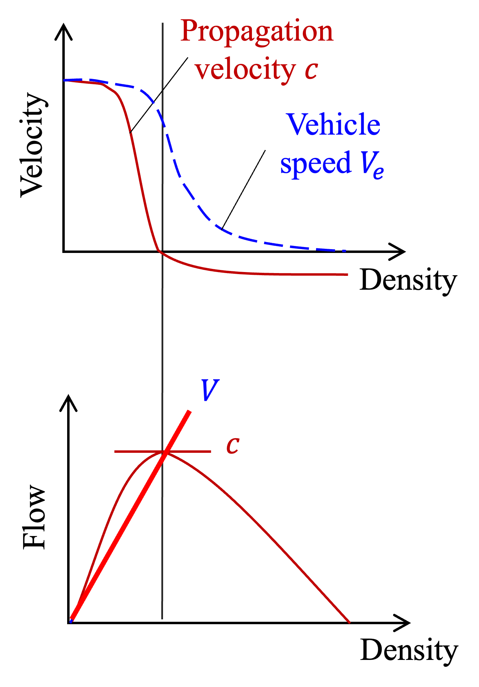
2.2 Shock Wave Propagation
Now, let’s consider a homogeneous road section where there is an abrupt change in traffic causing a shock wave of vehicles starting and stopping along the road.
The velocity at which a sudden change in traffic conditions propagates is called the shock wave velocity.
There are two shock wave transition conditions:
- From free-flow to congested traffic due to sudden slowdown/red light 🔴
- From congested traffic to free-flow due to easing traffic/green light 🟢
2.2.1 Case 1: Free-flow to Congested Traffic
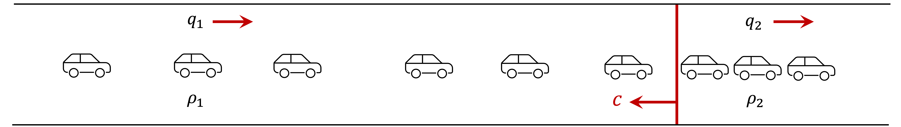
The shock wave is moving upstream (against the traffic flow), which happens when a traffic jam or sudden slowdown forms and starts propagating backward through the flow of vehicles.
2.2.2 Case 2: Congested Traffic to Free-flow
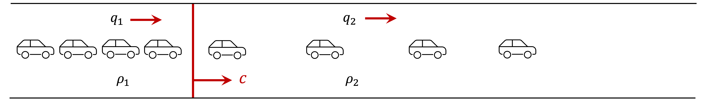
The shock wave propagates downstream (in the direction of traffic flow), which happens when a traffic starts easing and vehicles can suddenly accelerate, creating a wave of movement that propagates along the traffic.
2.2.3 Shock Wave Velocity Derivation
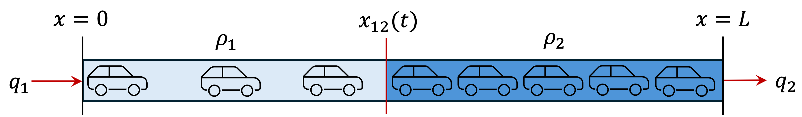
To derive the shock wave velocity \(s\), we consider
- Total number of vehicles: \(n=\rho_1 x_{12} + \rho_2 (L-x_{12}).\)
- \(L\) is the length of road segment and \(x_{12}\) is the position of the shock wave.
- From the conservation of vehicles, \(\dfrac{dn}{dt}=q_1-q_2.\)
- As partial time derivative: \[\begin{aligned} \frac{dn}{dt}&=\frac{d}{dt}(\rho_1 x_{12} + \rho_2 (L-x_{12})) \\ &= (\rho_1-\rho_2) \frac{dx_{12}}{dt} \\ q_1-q_2&= (\rho_1-\rho_2) {\color{red}s} \end{aligned} \]
2.2.1 Shock Wave Velocity Formula
The shock wave velocity \(s\) is given by the ratio of the difference in flow rates to the difference in densities across the shock wave:
\[ \boxed{s=\frac{q_2-q_1}{\rho_2-\rho_1}=\frac{Q(\rho_2)-Q(\rho_1)}{\rho_2-\rho_1}} \tag{4}\]
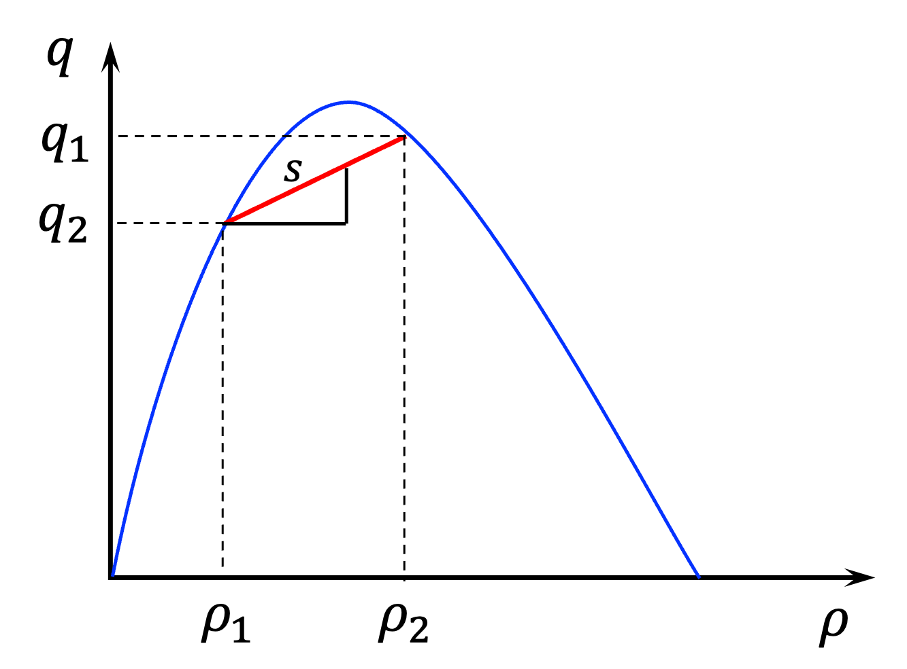
- Case 1: Free-flow to Congested Traffic
- \(q_2 < q_1\) and \(\rho_1 > \rho_2 \quad \Rightarrow \quad s<0 \quad \Rightarrow\) shock propagates upstream
- Case 2: Congested Traffic to Free-flow
- \(q_2 > q_1\) and \(\rho_1 < \rho_2 \quad \Rightarrow \quad s>0 \quad \Rightarrow\) shock propagates downstream
- Case 3: Stationary Bottleneck
- \(s=0 \quad \Rightarrow\) stationary bottleneck or interface.
Example 1: Shockwave Speed Calculation
Consider a homogeneous road section where the flow of traffic can be described by the LWR model. The relationship between traffic flow \(q(\rho)\) and traffic density \(\rho\) follows the fundamental diagram: \(q(\rho)=\rho V_\text{max} \left[1-\frac{\rho}{\rho_\text{max}}\right]\)
- The upstream section has a traffic density of \(\rho_1=60\) veh/km
- After a disturbance, the downstream section has a density of \(\rho_2=90\) veh/km
- \(V_\text{max}=100\) km/hr, and the jam density is \(\rho_\text{max}=120\) veh/km.
- Calculate the upstream and downstream flows.
- Determine the shockwave speed that separates upstream and downstream traffic.
- How much time will it take for the shockwave to travel 5 km upstream?
- Determine the shockwave speed when the upstream and downstream density change to \(\rho_1=15\) veh/km and \(\rho_2= 60\) veh/km.
- Calculate the upstream and downstream flows
\[ q_1 = \rho_1 V_\text{max} \left[1-\frac{\rho_1}{\rho_\text{max}}\right] = 60 \cdot 100 \left[1-\frac{60}{120}\right] = 3000 \text{ veh/hr} \]
\[ q_2 = \rho_2 V_\text{max} \left[1-\frac{\rho_2}{\rho_\text{max}}\right] = 90 \cdot 100 \left[1-\frac{90}{120}\right] = 2250 \text{ veh/hr} \]
- Determine \(s\) that separates upstream and downstream traffic.
\[ s = \frac{q_2-q_1}{\rho_2-\rho_1} = \frac{2250-3000}{90-60} = \frac{-750}{30} = -25 \text{ km/hr} \]
A negative shock wave speed means that the shock wave is moving upstream (against the flow of traffic), which happens when a traffic jam or sudden slowdown forms and starts propagating backward through the flow of vehicles.
- How much time will it take for the shockwave to travel 5 km upstream?
\[ t = \frac{\text{distance}}{\text{speed}} = \frac{5 \text{ km}}{25 \text{ km/hr}} = 0.2 \text{ hr} = 12 \text{ min} \]
- Determine the shockwave speed when the upstream and downstream density change to \(\rho_1=15\) veh/km and \(\rho_2= 60\) veh/km
\[ q_1 = \rho_1 V_\text{max} \left[1-\frac{\rho_1}{\rho_\text{max}}\right] = 15 \cdot 100 \left[1-\frac{15}{120}\right] = 1312.5 \text{ veh/hr} \]
\[ q_2 = \rho_2 V_\text{max} \left[1-\frac{\rho_2}{\rho_\text{max}}\right] = 60 \cdot 100 \left[1-\frac{60}{120}\right] = 3000 \text{ veh/hr} \]
\[ s = \frac{q_2-q_1}{\rho_2-\rho_1} = \frac{3000-1312.5}{60-15} = \frac{1687.5}{45} = 37.5 \text{ km/hr} \]
A positive shockwave speed indicates that the boundary between the two traffic states propagates downstream, in the direction of traffic flow.
Summary: Three Velocities in Traffic Flow
The three velocities in traffic flow are:
- Vehicle velocity: the speed of individual vehicles as a function of traffic density. \[V(\rho) = \dfrac{Q(\rho)}{\rho}\]
- Wave velocity / characteristic velocity: the speed at which small disturbances in traffic density propagate through the traffic flow. \[c(\rho) = Q'(\rho)\]
- Shock velocity: the speed at which discontinuities (shocks) in traffic density propagate through the traffic flow. \[s = \dfrac{\Delta Q}{\Delta \rho}\]
2.3 Method of Characteristics (Extended)
From the scalar conservation law for traffic flow, we have
\[\rho_t + c(\rho)\rho_x = 0, \quad c(\rho) = Q'(\rho)\]
In an \(x-t\) plane, the corresponding characteristic curves are given by:
\[ \frac{dx}{dt} = c(\rho) = Q'(\rho), \quad \frac{d\rho}{dt} = 0 \quad \text{along a characteristic} \]
Step 1: Choose A Velocity / Flux Model
Linear speed model: \[ Q(\rho) = V_\text{max} \left(\rho-\frac{\rho^2}{\rho_\max}\right), \qquad Q'(\rho) = V_\text{max} \left(1-\frac{2\rho}{\rho_\max}\right) \]
Nonlinear speed model: \[ Q(\rho) = V_\text{max} \left(\rho-\frac{\rho^3}{\rho^2_\max}\right), \qquad Q'(\rho) = V_\text{max} \left(1-3\left(\frac{\rho}{\rho_\max}\right)^2\right) \]
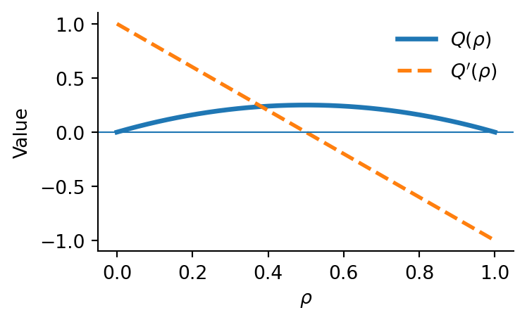
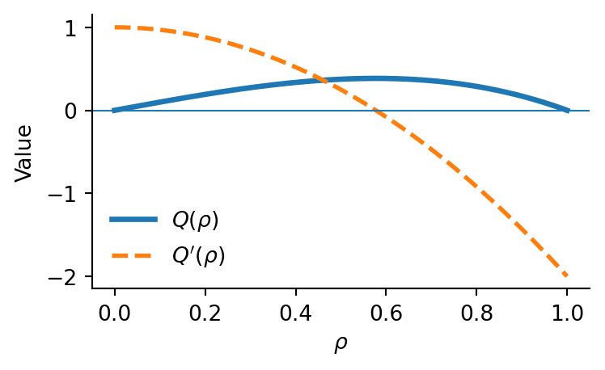
Step 2: Specify the Initial Condition \(\rho(x,0) = \rho_0(x).\)
From Step 1, determine the second derivative to check the concavity:
Linear speed model: \(Q''(\rho) = -\dfrac{2 V_\text{max}}{\rho_\max} < 0\) (concave)
Nonlinear speed model: \(Q''(\rho) = -\dfrac{6 V_\text{max}}{\rho_\max^2} \rho < 0\) (concave)
Initial condition for the Riemann problem with concave flux is: \[ \rho(x,0)=\begin{cases}\rho_L,&x<0,\\\rho_R,&x>0.\end{cases} \]
- produces a shock if \(\rho_L < \rho_R\).
- produces a rarefaction if \(\rho_L > \rho_R\).
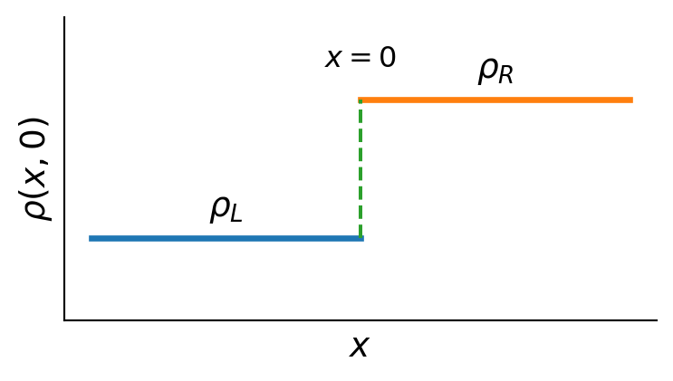
Step 3: Compute Characteristic Speeds
For each initial position \(x_0\), the characteristic speed is given by
\[ c = Q'(\rho(x_0,0)). \]
This speed remains constant along the characteristic originating from \(x_0\).
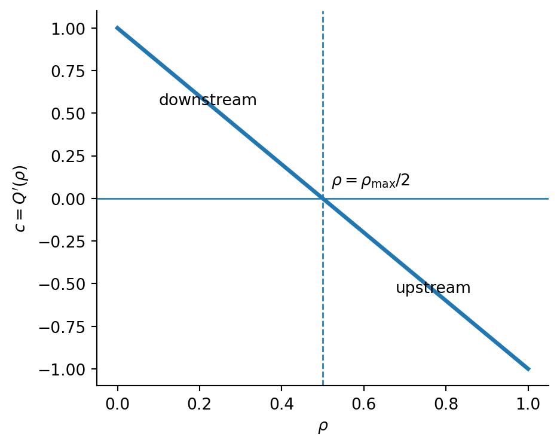
Step 4: Trace Characteristics
Each characteristic line is
\[ x(t) = x_0 + c t \]
with \((x_0,0)\) as its starting point. On the diagram, horizontal axis \(x\) represents space and vertical axis \(t\) represents time.
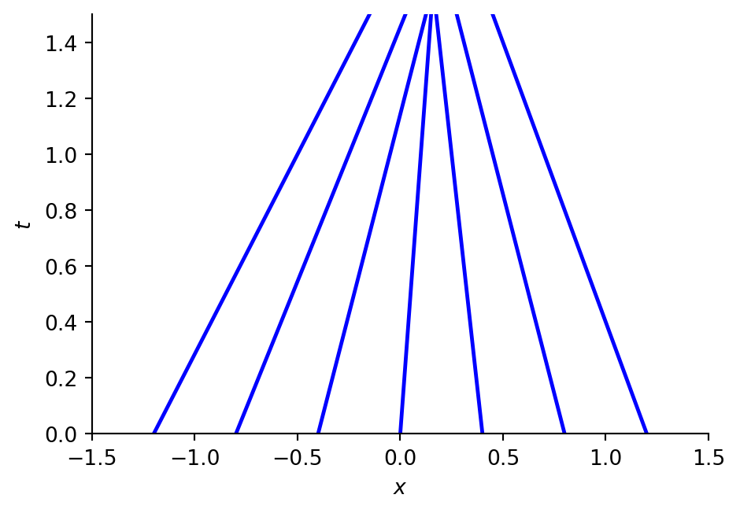
Step 5: Identify Shocks and Rarefactions (Special Cases)
- Shock waves \(\rho_L < \rho_R\):
draw a single line with slope given by the Rankine-Hugoniot (RH) condition: \[ S = \frac{Q(\rho_R) - Q(\rho_L)}{\rho_R - \rho_L} \]
The shock-wave velocity formula is the RH condition solved for \(s\).
- Rarefaction fans \(\rho_L > \rho_R\):
- draw a fan of characteristics spreading out from \(x_0\) filling the wedge \[ x=c(\rho_L)t \quad \text{to} \quad x=c(\rho_R)t. \]
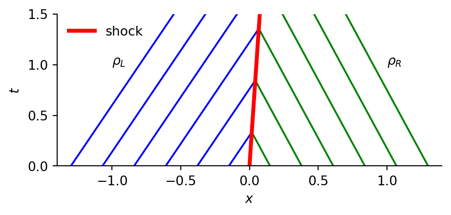
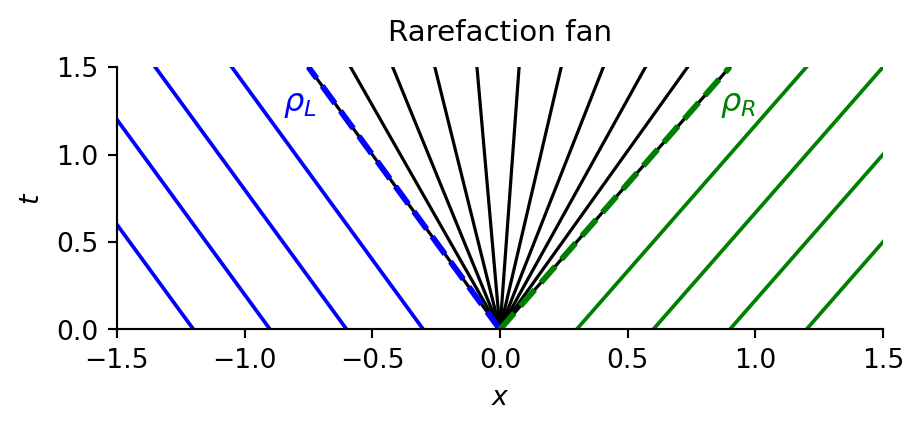
Step 6: Interpretation
- \(c>0\): characteristics move downstream (with the traffic flow)
- \(c<0\): characteristics move upstream (against the traffic flow)
- Shocks correspond to abrupt jam fronts.
- Rarefactions correspond to gradual openings of traffic.
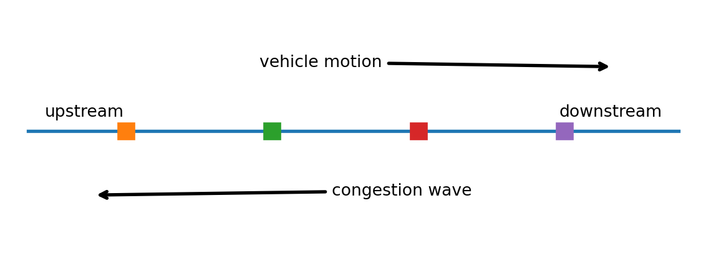
Example 2: Determining Shock or Rarefaction
Let \(\rho_L=100\) veh/km and \(\rho_R=20\) veh/km. Using the same traffic-flow model, the corresponding characteristic speeds are
\[ c_L=Q'(\rho_L)=-15\text{ km/h}, \qquad c_R=Q'(\rho_R)=90\text{ km/h}. \]
Determine whether a shock or rarefaction will form at the discontinuity.
Since \(\rho_L > \rho_R\), this indicates rarefaction rather than a shock.
In general, we can check the characteristic speeds:
\[ \boxed{ \begin{aligned} Q'(\rho_L)>Q'(\rho_R) &\quad\Rightarrow\quad \text{characteristics converge} \quad\Rightarrow\quad \text{shock},\\ Q'(\rho_L)<Q'(\rho_R) &\quad\Rightarrow\quad \text{characteristics diverge} \quad\Rightarrow\quad \text{rarefaction}. \end{aligned}} \]
- Since \(c_L<c_R,\) the characteristics on the left travel more slowly than those on the right. Therefore, the characteristics diverge from the initial discontinuity rather than intersect.
Hence, a rarefaction fan forms: \[ \boxed{Q'(\rho_L)<Q'(\rho_R) \quad\Longrightarrow\quad \text{Rarefaction}} \]
bounded by
- \(x=Q'(\rho_L)t=-15t\) on the left and \(x=Q'(\rho_R)t=90t\) on the right.
Traffic interpretation:
- The left state, \(\rho_L=100\) veh/km, represents congested traffic, while the right state, \(\rho_R=20\) veh/km, represents free-flowing traffic.
- The negative characteristic speed on the congested side means that information about the congestion propagates upstream at \(15\) km/h.
- The positive characteristic speed on the free-flow side means that information propagates downstream at \(90\) km/h.
- Physically, this represents congestion clearing and traffic gradually opening up.
Example 3: The linear velocity-density model
\[ v(\rho)=V_{\max}\left(1-\frac{\rho}{\rho_{\max}}\right), \quad Q(\rho)=\rho v(\rho) \]
Assume a step initial condition:
\[ \rho(x,0) = \begin{cases} \rho_L=0.12, & x<0,\\ \rho_R=0.06, & x>0, \end{cases} \]
Plot the characteristics using the RH condition.
Linear speed: \[ Q(\rho) = V_{\max}\left(\rho - \frac{\rho^2}{\rho_{\max}}\right), \quad Q'(\rho)=V_{\max}\left(1-\frac{2\rho}{\rho_{\max}}\right). \]
Since \(\rho_L=0.12 > \rho_R=0.06\) and \(Q'(\rho)\) is decreasing,
\[ c_L = Q'(\rho_L) < Q'(\rho_R) = C_R, \]
so the characteristics diverge, producing a rarefaction fan.
\[ \begin{aligned} c_L = 100 \left(1-\frac{2(0.12)}{0.15}\right) = -60 \text{ km/h} \end{aligned} \]
\[ \begin{aligned} c_R = 100 \left(1-\frac{2(0.06)}{0.15}\right) = 20 \text{ km/h} \end{aligned} \]
Thus, \(c_L < c_R\) and the characteristics spread from \(x=c_Lt\) to \(x=c_Rt\).
\[ \begin{aligned} \rho(x,t) = \begin{cases} \rho_L, & x \leq c_L t, \\ \frac{\rho_\max}{2}\left(1+\frac{x}{tV_\max}\right), & c_L t < x < c_R t, \\ \rho_R, & x \geq c_R t. \end{cases} \end{aligned} \]
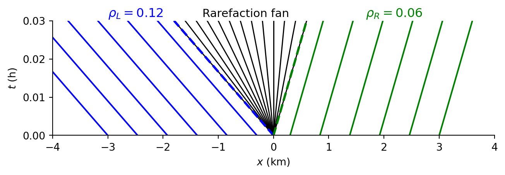
Example 4: The linear velocity-density model with red light
Consider the “red-light” initial condition
\[ \rho(x,0) = \begin{cases} \rho_\max, & x < 0 \\ 0, & x \ge 0 \end{cases} \]
Here \(\rho_L>\rho_R\). Plot the characteristics and show the formation of a rarefaction fan bounded by the speeds \(c(\rho_\max)\) and \(c(0)\).
\[ c(\rho_\max) = V_\max(1-2)= -V_\max, \quad c(0) = V_\max(1-0) = V_\max \]
- Since \(c(\rho)\) is decreasing in \(\rho\) and \(c_L < c_R\),
- the characteristics spread from \(x=-V_\max t\) to \(x=V_\max t\):
\[ \rho(x,t) = \begin{cases} \rho_\max, & x \le -V_\max t \\ \dfrac{\rho_\max}{2}\left(1-\dfrac{x}{V_\max t}\right), & -V_\max t < x < V_\max t \\ 0, & x \ge V_\max t \end{cases} \]
Characteristics:
- Outside the fan: \(x(t) = x_0 \pm V_\max t\) (with the appropriate sign)
- Inside the fan: \(x(t) = \xi t\) with \(\xi \in [-V_\max, V_\max],\)
- carrying \(\rho = \frac{\rho_\max}{2}\left(1-\frac{\xi}{V_\max}\right)\)
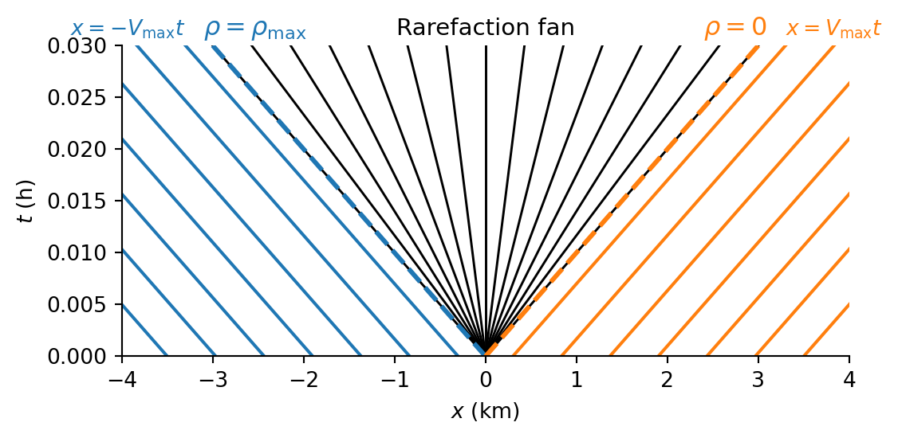
Example 5: The nonlinear velocity-density model (shock)
\[ v(\rho) = V_{\max} \left( 1 - \left(\frac{\rho}{\rho_{\max}}\right)^2 \right), \qquad Q(\rho) = \rho v(\rho) \]
Assume a step initial condition for the traffic density: \[ \rho(x,0) = \begin{cases} \rho_L=0.05, & x < 0, \\ \rho_R=0.10, & x > 0, \end{cases} \]
with \(\rho_L < \rho_R\). Plot the characteristics and the corresponding rarefaction fan.
\[ Q(\rho) = V_\max\left( 1 - \left(\frac{\rho}{\rho_{\max}}\right)^2 \right) \rho, \quad Q'(\rho) = V_\max\left( 1 - 3\left(\frac{\rho}{\rho_{\max}}\right)^2 \right) \]
- \(c(\rho)\) is strictly decreasing on \([0, \rho_{\max}]\).
- \(\rho_L < \rho_R \Rightarrow c(\rho_L) > c(\rho_R)\) indicates shock formation.
\[ S = \frac{Q(\rho_R) - Q(\rho_L)}{\rho_R - \rho_L} = V_\max \left(1 - \frac{\rho_R^2 + \rho_R\rho_L + \rho_L^2}{\rho_{\max}^2}\right) \]
The Riemann solution is
\[ \rho(x,t) = \begin{cases} \rho_L, & x < St, \\ \rho_R, & x > St, \end{cases} \quad \text{with shock at } x=s(t)=St \]
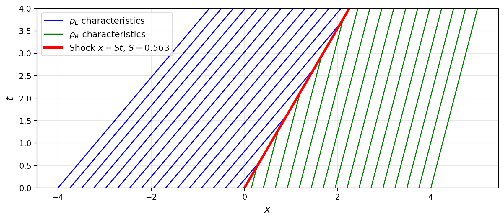
Example 6: The nonlinear velocity-density model (rarefaction)
Using the same nonlinear velocity-density model in Example 5, we now consider a step initial condition:
\[ \rho(x,0) = \begin{cases} \rho_L=0.12, & x < 0, \\ \rho_R=0.08, & x > 0, \end{cases} \]
with \(\rho_L>\rho_R\). Plot the characteristics and rarefaction wave.
The fan edges are \(x = c(\rho_L) t, \quad x = c(\rho_R) t\)
Inside the fan, use self-similarity \(x/t = \xi = c(\rho)\) and invert \(c\):
\[ \xi = V_{\max} \left(1-3\left(\frac{\rho}{\rho_{\max}}\right)^2\right) \quad \Rightarrow \quad \left(\frac{\rho}{\rho_{\max}}\right)^2 = \frac{1}{3}\left(1-\frac{\xi}{V_{\max}}\right). \]
\[ \rho(x,t) = \begin{cases} \rho_L, & x < c(\rho_L) t, \\ \rho_{\max} \sqrt{\frac{1}{3}\left(1-\frac{x}{tV_{\max}}\right)}, & c(\rho_L) t \le x \le c(\rho_R) t, \\ \rho_R, & x > c(\rho_R) t. \end{cases} \]
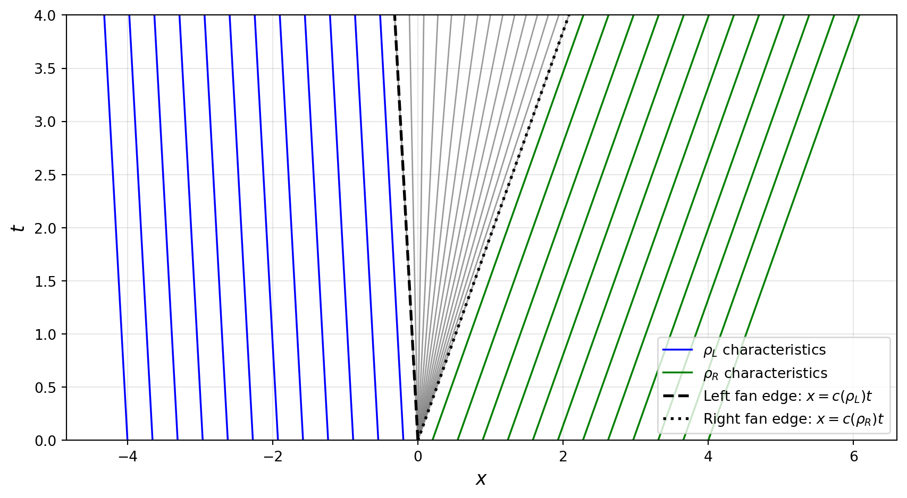
3. Applications of the LWR model
3.1 Incident and queue management
An accident or road closure reduces the effective downstream capacity.
If the incoming demand remains unchanged, \[ q_{\mathrm{demand}}>C_{\mathrm{incident}}, \] where \(C_{\mathrm{incident}}\) denotes the reduced capacity due to the incident.
Vehicles accumulate and a shock wave travels upstream with speed given by (4).
LWR model supports operational decisions such as:
- warning drivers upstream of the queue;
- diverting traffic before the shock reaches a junction;
- reducing inflow with ramp meters;
- estimating the time for congestion to reach a detector.
3.2 Lane drops and work zones
A work zone can reduce a road from three lanes to two. If the per-lane capacity is \(C\), then \[ C_{\mathrm{before}}=3C,\quad C_{\mathrm{after}}=2C. \]
Even when traffic behaviour in each lane is unchanged, the total downstream capacity falls by one third.
If demand \(D\) satisfies \(2C<D\leq3C,\) the upstream section can carry the demand but the work-zone section cannot.
- A queue forms at the lane drop and its boundary propagates upstream.
Example 7: Ramp Metering on a Two-Lane Highway
A two-lane highway carries \(3000\) veh/h. An incident reduces capacity to one lane, with \(C=1928.6\) veh/h per lane. A ramp meter can reduce incoming flow by up to \(600\) veh/h. Determine:
- whether a queue forms without control;
- the minimum flow reduction needed to avoid further accumulation;
- whether the ramp meter is sufficient;
- which quantity should be monitored to detect recovery.
- The incident capacity is
\[ C_{\mathrm{incident}}=1928.6\text{ veh/h}<3000\text{ veh/h} \Rightarrow \text{ a queue forms.} \]
- The required reduction to avoid further accumulation is
\[ 3000-1928.6=1071.4\text{ veh/h}. \]
- Is the ramp meter sufficient?
The ramp meter can reduce flow by only \(600\) veh/h, leaving
\[ 3000-600=2400\text{ veh/h}>1928.6\text{ veh/h}. \]
It is therefore insufficient to stop queue growth by itself
- Which quantity should be monitored to detect recovery?
- Monitor density or the shock-wave position;
- recovery begins when demand falls below incident capacity.
Example 8 (challenge): A transition into congestion
Use the triangular model \(Q(\rho)=\min\{90\rho,\;15(150-\rho)\},\) with flow in veh/h and density in veh/km. Let the density changes abruptly from \(\rho_L=10\) veh/km to \(\rho_R=60\) veh/km, where \(L\) denotes the upstream state and \(R\) the downstream state. Determine:
- \(Q(\rho_L)\) and \(Q(\rho_R)\);
- the characteristic speeds \(c(\rho_L)\) and \(c(\rho_R)\);
- the transition-wave speed using \(V_s=\frac{Q(\rho_R)-Q(\rho_L)}{\rho_R-\rho_L};\)
- whether the transition wave moves upstream or downstream;
- whether the result is consistent with the characteristic speeds.
- The two states lie on different branches:
\[ Q(10)=90(10)=900\text{ veh/h},\qquad Q(60)=15(150-60)=1350\text{ veh/h}. \]
- Their characteristic speeds are
\[ c(10)=90\text{ km/h},\qquad c(60)=-15\text{ km/h}. \]
- The transition-wave speed is
\[ V_s=\frac{1350-900}{60-10}=9\text{ km/h}. \]
- Since \(V_s>0\), the interface moves downstream. Because it is positive, the transition wave moves in the direction of traffic flow.
\[-15 < 9 < 90,\]
- \(V_s\) lies between the characteristic speeds, as expected for a compressive transition from free flow into congestion.
4. Summary
- Traffic flow is described using density, flow, and speed.
- The fundamental relation is \(q=\rho v\).
- A flow-density relation \(q=Q(\rho)\) closes the macroscopic model.
- Conservation of vehicles gives the continuity equation.
- Ramps and lane changes modify the conservation law through source terms and lane counts.
- The LWR model is the first-order conservation law \(\rho_t+Q(\rho)_x=0\).
- Characteristics travel at the wave velocity \(Q'(\rho)\).
- Capacity comparisons determine whether an on-ramp creates downstream congestion.